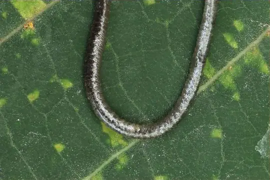
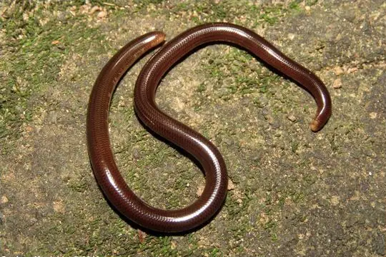

Gerrhopilus
The genus Gerrhopilus (family Gerrhopilidae) has 28 living species in SnakeList (none venomous), recorded in 6 countries.
- 28living species
- 28non-venomous
- 6countries
About the genus
A genus of the family Gerrhopilidae (Indo-Malayan blind snakes).
Species
Showing 28 species
- No photo yetAndaman Worm SnakeGerrhopilus andamanensis
- No photo yetBeddome's Worm SnakeGerrhopilus beddomii

Black BlindsnakeGerrhopilus ater- No photo yetFew-scaled Worm SnakeGerrhopilus oligolepis
- No photo yetFlower's Worm SnakeGerrhopilus floweri
- No photo yetFred Parker's BlindsnakeGerrhopilus fredparkeri
- No photo yetJan's Worm SnakeGerrhopilus mirus
- No photo yetLowland Beaked BlindsnakeGerrhopilus depressiceps
- No photo yetMcDowell’s BlindsnakeGerrhopilus mcdowelli
- No photo yetMontane BlindsnakeGerrhopilus inornatus
- No photo yetNegros Island Worm SnakeGerrhopilus hedraeus
- No photo yetNilgiri Hills Worm SnakeGerrhopilus tindalli
- No photo yetPanaeate Island BlindsnakeGerrhopilus addisoni

Sri Lanka Worm Snake (ceylonicus)Gerrhopilus ceylonicus- No photo yetThurston's Worm SnakeGerrhopilus thurstoni
- No photo yetWestern Java Worm SnakeGerrhopilus bisubocularis
- No photo yetGerrhopilus eurydice
- No photo yetGerrhopilus flavinotatus
- No photo yetGerrhopilus hades
- No photo yetGerrhopilus lestes
- No photo yetGerrhopilus lorealis
- No photo yetGerrhopilus papuanorum
- No photo yetGerrhopilus persephone
- No photo yetGerrhopilus polyadenus
- No photo yetGerrhopilus slapcinskyi
- No photo yetGerrhopilus sumatranus
- No photo yetGerrhopilus suturalis
- No photo yetGerrhopilus wallachi
No snakes in Gerrhopilus match.
About the genus Gerrhopilus
- Distribution: living species recorded in 6 countries, on 2 continents: Asia, Oceania.
- Family: Gerrhopilidae.
- Countries and territories: India, Indonesia, Papua New Guinea, Philippines, Sri Lanka, Thailand.
Compare its species
Its living species side by side. Lengths come only from SnakeList’s reviewed, sourced accounts; the others are left blank rather than guessed.
Show the table of all 28 species
| Species | Venom | Recorded in | Adult length (reviewed accounts) |
|---|---|---|---|
| Andaman Worm Snake Gerrhopilus andamanensis | Non-venomous | 1 country (Asia) | No reviewed account yet |
| Beddome's Worm Snake Gerrhopilus beddomii | Non-venomous | 1 country (Asia) | No reviewed account yet |
| Black Blindsnake Gerrhopilus ater | Non-venomous | 2 countries (Asia, Oceania) | No reviewed account yet |
| Few-scaled Worm Snake Gerrhopilus oligolepis | Non-venomous | 1 country (Asia) | No reviewed account yet |
| Flower's Worm Snake Gerrhopilus floweri | Non-venomous | 1 country (Asia) | No reviewed account yet |
| Fred Parker's Blindsnake Gerrhopilus fredparkeri | Non-venomous | 1 country (Oceania) | No reviewed account yet |
| Jan's Worm Snake Gerrhopilus mirus | Non-venomous | 1 country (Asia) | No reviewed account yet |
| Lowland Beaked Blindsnake Gerrhopilus depressiceps | Non-venomous | 1 country (Oceania) | No reviewed account yet |
| McDowell’s Blindsnake Gerrhopilus mcdowelli | Non-venomous | 1 country (Oceania) | No reviewed account yet |
| Montane Blindsnake Gerrhopilus inornatus | Non-venomous | 1 country (Oceania) | No reviewed account yet |
| Negros Island Worm Snake Gerrhopilus hedraeus | Non-venomous | 1 country (Asia) | No reviewed account yet |
| Nilgiri Hills Worm Snake Gerrhopilus tindalli | Non-venomous | 1 country (Asia) | No reviewed account yet |
| Panaeate Island Blindsnake Gerrhopilus addisoni | Non-venomous | 1 country (Oceania) | No reviewed account yet |
| Sri Lanka Worm Snake (ceylonicus) Gerrhopilus ceylonicus | Non-venomous | 1 country (Asia) | No reviewed account yet |
| Thurston's Worm Snake Gerrhopilus thurstoni | Non-venomous | 1 country (Asia) | No reviewed account yet |
| Western Java Worm Snake Gerrhopilus bisubocularis | Non-venomous | 1 country (Asia) | No reviewed account yet |
| Gerrhopilus eurydice | Non-venomous | 1 country (Oceania) | No reviewed account yet |
| Gerrhopilus flavinotatus | Non-venomous | 1 country (Oceania) | No reviewed account yet |
| Gerrhopilus hades | Non-venomous | 1 country (Oceania) | No reviewed account yet |
| Gerrhopilus lestes | Non-venomous | 1 country (Oceania) | No reviewed account yet |
| Gerrhopilus lorealis | Non-venomous | 1 country (Oceania) | No reviewed account yet |
| Gerrhopilus papuanorum | Non-venomous | 1 country (Oceania) | No reviewed account yet |
| Gerrhopilus persephone | Non-venomous | 1 country (Oceania) | No reviewed account yet |
| Gerrhopilus polyadenus | Non-venomous | 1 country (Oceania) | No reviewed account yet |
| Gerrhopilus slapcinskyi | Non-venomous | 1 country (Oceania) | No reviewed account yet |
| Gerrhopilus sumatranus | Non-venomous | 1 country (Asia) | No reviewed account yet |
| Gerrhopilus suturalis | Non-venomous | 2 countries (Asia, Oceania) | No reviewed account yet |
| Gerrhopilus wallachi | Non-venomous | 1 country (Oceania) | No reviewed account yet |